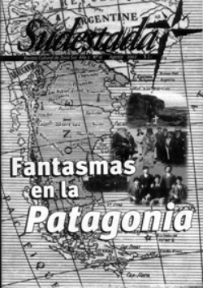

Buscar
Fantasmas de la Patagonia
Un derrotado cacique araucano de frente al exterminio de su gente, un científico aventurero juntando bichos raros en tierras extrañas, una pareja de forajidos del Far West con la utopía de transformarse en ganaderos, un historiador en busca de la verdad detrás de una masacre. Historias, miles de historias a lo largo del tiempo y con un escenario bellísimo como telón de fondo, la Patagonia.
Edición N° 11
Agosto 2002
Revista bimensual
Comprar edición impresaSumario
- Fantasmas de la Patagonia
- Primer Aniversario
- Quique Pesoa: "Dejarte sin laburo hoy es peor que ponerte un revólver en la cabeza"
Compartir Articulo
Curiosa imagen la que a uno se le dibuja cuando cierra los ojos, alza la voz y dice Patagonia. Una y otra vez, Patagonia dice uno, y termina enroscado en mil historias escritas por el viento del sur, presentes en cada barda rojiza, en la jarilla al costado de la ruta, en el silencio de la gélida noche. Patagonia dice también el viento, y cuenta mil historias, y dice tanto de esta tierra llena de fantasmas que nacen y mueren cada día, que el cauce de los ríos se lleva a cada pueblo.
El viento sopla miles de cuentos, dice que esta tierra tiene dueño en cada alambrado que la divide, propiedad de los Braun, de los Menéndez Behety y, ahora, de otros como los Benetton, o los Soros. Patagonia, y la sangre se mezcla una y otra vez con el río, la sangre derramada por los sables de uniformados al mando de los Roca, de los Varela; sangre derramada por miles de años de historia en cada tehuelche rebelde, en cada temible mapuche.
Sangre, dice el viento, y cuenta de la sangre de los peones santacruceños, que soñaban con una existencia más digna y terminaron temblando de frío ante los fusiles militares, las tumbas sin nombre, como tantos otros, como aquellos en la oscuridad de una prisión en Trelew, también fusilados mucho tiempo después.
El viento suena fuerte y recuerda la polvareda anunciando el malón de Pincén, la traición de Catriel, la derrota de Namuncurá; se ríe el viento de la pomposa Conquista del Desierto, prefiere soplar otra vez. Sopla y en su murmullo se escucha Patagonia, y después uno puede oír con precisión el trayecto del Beagle por sus mares, la llegada de los gringos galeses, los vuelos rasantes de Saint Exupery, los balazos perdidos de Butch Cassidy, el silencio respetuoso de Corto Maltés y de Hugo Pratt ante la belleza del paisaje. Llega la noche y los guanacos buscan reparo del viento, porque saben de memoria la historia del petróleo, de esa YPF que llegó, y de sus pies brotaron como jazmines pueblos enteros, como Caleta Olivia, Comodoro Rivadavia, Cutral Co. Hoy esos nombres significan otras cosas. Hoy los miles de ductos y tuberías que recorren las entrañas de esta tierra la desangran, y los comillos que se hunden son foráneos, y contaminan, y se roban la riqueza, para siempre. Patagonia, dice uno también, y trata de tomar apuntes de algunas de esas historias que se escriben, todos los días, con los trazos del viento del sur.
El Atila de las Pampas
Por primera vez en su vida, Calfucurá detuvo su caballo un momento para ver mejor la sangre de sus hombres en el campo de batalla. El supremo jefe araucano comprendió que esa sangre era la suya, que aquel silencio eterno que coronaba la derrota de los suyos en los campos de San Carlos era, definitivamente, el fin. Sangre, sangre de hombres y de caballos mezclada en la meseta apenas interrumpida por la jarilla del campo. Sangre, pensó Calfucurá otra vez, mientras taqueaba a su caballo para seguir presuroso la marcha rumbo a sus toldos de Salinas Grandes. La huida hacia el fin de su historia.
Esa tarde del 8 de marzo de 1872, en la frontera oeste de la provincia de Buenos Aires, las temibles hordas del Atila de las Pampas eran derrotadas por primera vez por el ejército y por los traidores, cerrando para siempre un episodio clave en la historia argentina; el del dominio absoluto del indio en el desierto. "Calfucurá era como un dios, cuando hacía nguillatún todos tenían que darle lo que él pedía. En los malones -cuando se veía urgido-, él pedía una lluvia o un viento que levantaba las piedras y el huinca tenía que volverse; ése es el poder que tenía.
A lo mejor tenía un Pichi-Pillán. Era una piedra con la forma de persona, ése es el que le daba la fuerza para ir a la guerra", comentaba el mapuche José Carril Pircunche sobre su jefe. Calfucurá (Piedra Azul, en mapudungun) fue uno de los caciques más respetados por el huinca en toda la Patagonia, en particular por sus alianzas con Rosas y con Urquiza durante largo tiempo. Pero la muerte del líder de los federales rompió los acuerdos de paz firmados y desató la furia guerrera en el hombre que comandaba "la confederación más vasta de tribus del desierto que haya tenido lugar desde el tiempo de la conquista", según reconoció Bartolomé Mitre. Bahía Blanca fue el blanco preferido por los malones del Anticristo, del Aníbal del Desierto, cayendo una y otra vez sobre su población, arreando en total casi 170.000 cabezas de ganado, diezmando con su velocidad y fiereza a las tropas hacinadas en los fortines de la zona.
Pero esa mañana algo iba a cambiar: 3.500 indios avanzaron sobre San Carlos de Bolívar, listos para una nueva victoria. Renquecurá tenía a su cargo el ala izquierda con mil lanzas; al centro otras tantas, propiedad de los hombres de Pincén y a las órdenes de Catricurá; y a la derecha, otros mil más esperando las órdenes de Namuncurá, el hijo mayor y sucesor de Calfucurá. En la retaguardia, aguardaba novedades el cacique Epumer Rosas con 500 ranqueles. La polvareda puso en alerta a los hombres, y Calfucurá levantó su brazo apenas divisó las tropas del traidor cacique Cipriano Catriel enfrente, utilizadas como primera línea de combate por el general del ejército, Ignacio Rivas. En un segundo, el malón se lanzó a la caza de los enemigos con un veterano Calfucurá enredado en el combate desde el principio. Pero los cañones y los rémington del huinca hicieron estragos y definieron la batalla. Calfucurá había sido derrotado, y era el principio del fin.
El supremo jefe notó como las riendas de su caballo se iban manchando de toda aquella sangre y supo que sus manos estaban empapadas. La sangre de sus hombres, su sangre. Atrás, en el silencio, podían escucharse los murmullos de la derrota. El caballo de Calfucurá no volvió a detenerse y aquel hombre gigante, aquel que había conseguido ser temido como el demonio por el huinca, supo, con las manos manchadas de su sangre, que todo había terminado.
Bichos a bordo
Solo, en la penumbra de su pequeña habitación, el anciano científico volvía a convocar los recuerdos del pasado en aquel cuaderno borroneado por miles de notas. "Al revivir imágenes del pasado encuentro que, con frecuencia, se cruzan ante mis ojos las planicies patagónicas, empero las mismas son juzgadas por todos como las más miserables e inútiles. Se caracterizan sólo por cuanto poseen de negativo: sin habitantes, sin agua ni árboles, sin montañas, sólo poseen plantas enanas", escribía un anciano Charles Darwin. Pero no se detenía, continuaba en la ardua tarea de narrar su historia de viajes por la América desconocida, y decía "¿Por qué entonces -y el caso no es peculiar solamente para mí- tienden esas tierras áridas a tomar posesión de mi mente? ¿Por qué la más plana, más verde y fértil pampa, que es útil al ser humano, no me produce igual impresión? Apenas me lo explico; pero en parte debe ser por el horizonte que aquéllas dan a la imaginación". La pluma del viejo Darwin se detenía ahora un momento, el Diario de un naturalista alrededor del mundo se acercaba ya a sus últimas páginas y los recuerdos golpeaban con mayor fiereza en su memoria.
Por un momento, se imaginó otra vez a bordo del Beagle, rompiendo las olas y el frío de la noche patagónica, buscando un reparo en la nave que lo protegiera al menos por un segundo del bamboleo constante del barco por los mares del sur. Ese joven británico, estudiante poco aplicado pero muy interesado por la naturaleza, descubridor de la obra prohibida de su abuelo Erasmus, estaba solo en la nave. La tripulación no le hablaba, con excepción de las veces que lo insultaban por llenarle de bichos raros el barco. A su capitán, de nombre Fitz Roy, tampoco le había caído demasiado bien desde un principio al detectarle una nariz de perezoso, según los preceptos ya obsoletos del fisiognomismo de la época. Pero al joven Darwin, esa indiferencia poco le importaba; el viaje era una aventura inigualable a sus 23 años, y esos bichos que desbordaban su camarote eran, cada uno de ellos, una especie inédita, sorprendente.
Como aquella rara avestruz que poblaba el suelo patagónico, con sus características físicas alteradas como consecuencia de la zona por donde Darwin las encontraba.
El joven Darwin miraba y anotaba en su libreta "movilidad en las especies", y luego seguía su camino, temeroso de ser olvidado en aquellos inhóspitos parajes por la tripulación del Beagle.
El viejo Darwin sonreía ante los recuerdos y tosía, tosía con la furia de esa desconocida enfermedad que lo consumía todos los días. Una enfermedad que, según sus propios estudios, se había generado por la picadura de un gran insecto negro durante su paso por las pampas sudamericanas.
El hombre más peligroso de Europa tosía y se doblaba del dolor. Pero no sufría cuando recordaba los gritos de los marinos del Beagle, aquellos hombres rústicos que lo insultaban y se burlaban de sus bichos patagónicos. Otra vez, cerró los ojos y sintió como nunca antes las olas rompiendo contra el casco del Beagle, el viento helado castigando a los hombres en cubierta, los bichos en su camarote escapando de las frágiles prisiones de vidrio por el ímpetu de la tormenta. En ese momento, habría dado cualquier cosa por volver a sentir todo aquello por un minuto más. Pero ya era tarde, miró por última vez el manuscrito y soplo sin fuerza el fuego de la lumbre...
(La nota completa en la edición gráfica de Sudestada N°11)
Comentarios
Hugo Montero
Articulos más vistos


LIBRERÍA SUDESTADA

Colección infantil

Distribuidora de Libros

Suscripción

Sudestada en URUGUAY